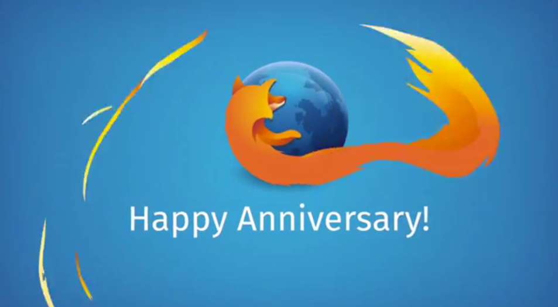

Firefox 的十年生日，也誕生了許多酷炫的新技術可供開發者體驗。
近十年來，Mozilla 不只建構了 Firefox，同時也橫跨 Firefox 與其他瀏覽器，塑造出使用者目前所熟悉的諸多 Web 體驗。
當初就是為了擺脫微軟 (Microsoft) 對網路的控制，才誕生了「Mozilla」專案。由於早先 IE 6 達到 98% 瀏覽器市佔率，Microsoft 可說是扼住網路演進的咽喉。為了扭轉此一局勢，Mozilla 當時並不僅告知全世界：「如果讓單一公司不成比例的掌握日常生活的重要生態系統 (如網路)，將是多麼可怕的一件事」，同時也努力打造更好、更強大的 Web 與瀏覽器 ─ Firefox。Firefox 為網路所引領的競爭力與創新力，讓 Web 急遽改變 Open Web 與瀏覽器的版圖長達十年。
今天，再也沒有任一瀏覽器廠商可達到之前 Microsoft 的市佔率。使用者可自行選用Microsoft、Google、Apple，當然還有 Mozilla 的瀏覽器。達到這種多強鼎立的現況，就是使用者對我們最近十年努力方向最直接的肯定。
Mozilla 不只打造消費者導向的瀏覽器，也塑造了 Web 本身。為了滿足專利或私有的生態系統，Web 必須迎合甚至超越原生平台的功能與效能。而我們過去十年持續創新 Web 技術並努力推廣，以期能早日完成標準化。

遊戲
遊戲已經成為諸多重要的娛樂形式之一。先前的遊戲必須依賴外掛程式，才能在瀏覽器上運作，也因此限制了遊戲在 Web 上的普及度與能見度。Mozilla 率先開發的多項新技術，足可解放 Web 成為更身歷其境的遊戲平台。而 WebGL 更已經遍及於所有的新款瀏覽器中。另外還有新的 JavaScript 子集 ─ asm.js，也讓遊戲引擎能更接近原生效能。
效能強化
另必須很驕傲的說，Mozilla 的 JavaScript 引擎目前在多樣效能指標上，已經執市場 JavaScript 效能之牛耳，也達到瀏覽器之間的最佳遊戲體驗。我們目前也已經開始在「每夜更新版 (Nightly)」中實驗 E10，要讓網頁內容獨立於 Firefox 的執行程序之外，進而為 Firefox 使用者提供更高的效能與安全優勢。針對效能方面的進展，我們即將推出 64 位元 Windows 的版本，以造福日常工作需要額外效能的使用者。
進階音訊與視訊
Mozilla 身為 WebRTC 的提倡者之一，Web 的音訊與視訊也正發生跳躍式的進展。此新的 Web API 即透過音訊、視訊、資料通道而進行即時通訊作業。另在與 Telefonica 的長期合作下，我們更帶來了 WebRTC架構的視訊＼音訊功能「Firefox Hello」，讓使用者不需另外下載軟體或建立帳戶，也能即時開始聯絡溝通。
打造 Web
我們的志工社群仍持續在 Firefox 與 Web 的演進中扮演重要角色。來自於巴西社群的 Andre Natal，就為Firefox 與 Firefox OS 貢獻了語音辨識功能。使用者只要透過自己的聲音，就能與桌面版瀏覽器或 Firefox OS 裝置輕鬆互動。此 Web Speech API 目前已經加入 Gecko 引擎。
如果你就是 Web 開發者，也對上述的技術躍躍欲試，我們另在十周年期間提供其他特殊功能。在建構 Web 之時，端賴開發者打造出 Web 能用的內容與經驗。為彰顯這些人的努力成果，以及我們對 Web 開發者社群的承諾，我們專為開發者打造 Firefox 開發者版本 (Developer Edition)，其內已依照開發者的需求而預設開啟了多項功能。此版簡化了開發流程，且不論是以桌機或行動裝置為目標系統，新增的功能亦可橫跨多個平台而簡化 Web 的建構程序。
未來方向
在十年前，Mozilla 就開始「將 Web 從 Microsoft 的專利控制中解放出來」的漫長旅途。而今天我們可說大致上已完成了此一目標。為 Open Web 奮戰的下個階段，就是 iOS 與 Android 雙強壟斷的行動產業。如同我們十年前透過 Firefox 對微軟採取的行動，現在我們也希望能用 Firefox OS 打破現由 Google 與 Apple 所支配的行動 Web。從 Firefox OS 在去年發表以來，已經擴及全球共 24 個國家，其中包含最近才加入此版圖的印度。如果你已經在用我們的 Firefox OS 開發者手機，現在也已經有新的 Firefox OS 2.0 開發者版本供你開發。
我們另亦透過 Servo 與 Rust 強化 Web 的基礎技術。Servo 是新一代 Web 的繪圖引擎，除了進階支援多工機制之外，也提升了安全性與穩定度。而多虧有新系統程式設計語言 Rust，經過我們的初步建構並獲得社群的強力支援，才得以完成 Servo。
最後，Mozilla 已經開始探索 Web 的下一個可能：虛擬實境。我們將率先開發 Web 上的虛擬實境功能，並啟動 mozvr.com 作為技術展示的平台，讓開發者能夠將虛擬實境的體驗帶上 Web。
─ Mozilla 技術長 Andreas Gal
原文連結：10 Years of Firefox and Innovation for the Web Platform